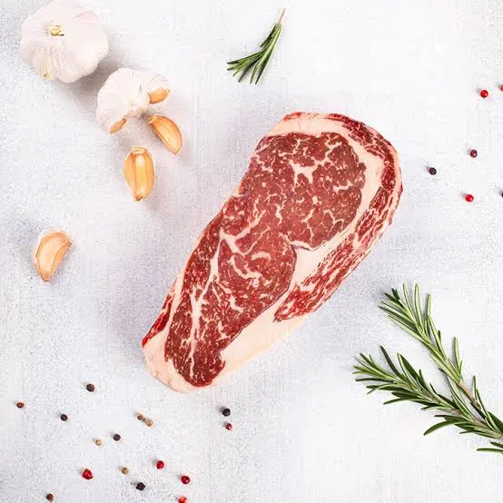

О кооперативе
Он-Арча — кооператив из Нарынского района
Мы объединяем фермеров, которые держат скот на высокогорных пастбищах. Животные пасутся на свободном выгуле, а мясо приходит к вам охлаждённым, без заморозки.
Текст-заглушка для демо: детали о кооперативе здесь условные.
- Говядина, як и баранина от своих хозяйств
- Разделка под заказ: стейки, плов, шашлык, бешбармак
- Доставка рефрижератором по всем областям
Эта страница — отдельный HTML-документ без React. Переход сюда и
обратно делает браузер: на обеих страницах есть правило
@view-transition { navigation: auto; }, а у фото
одинаковое имя view-transition-name: hero-photo.